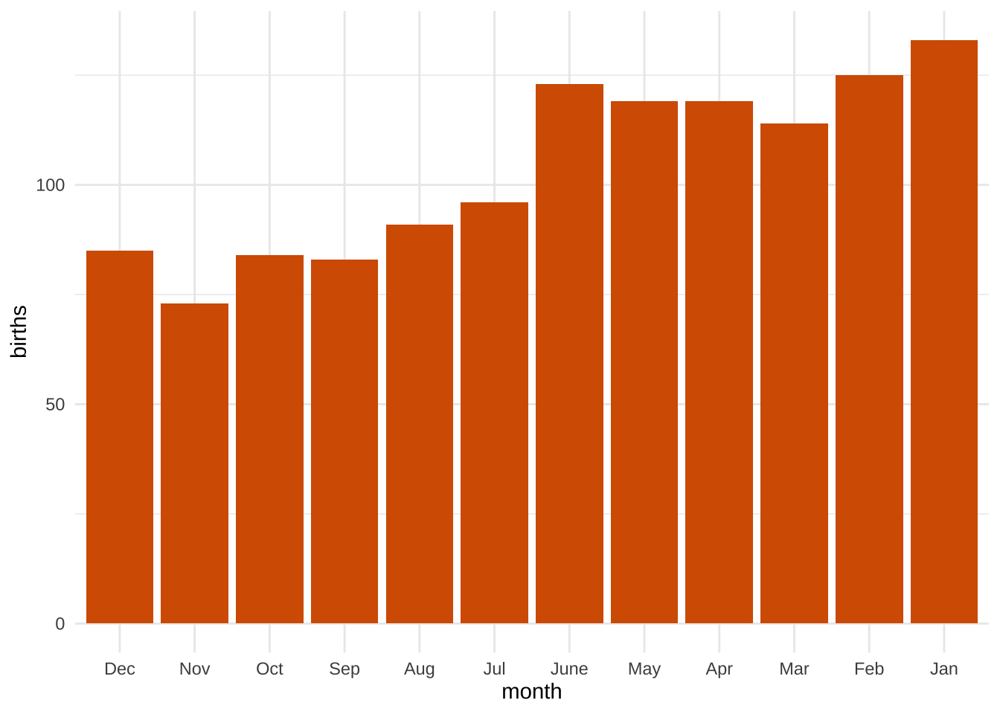
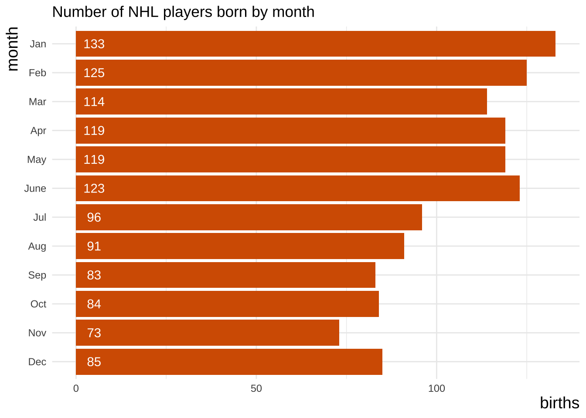
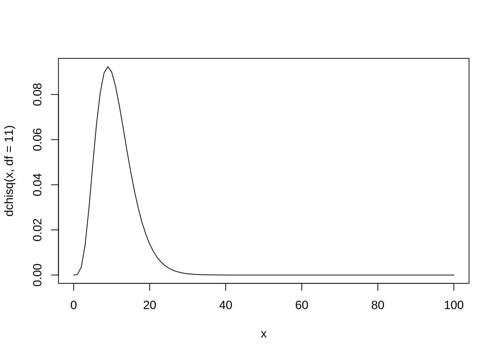
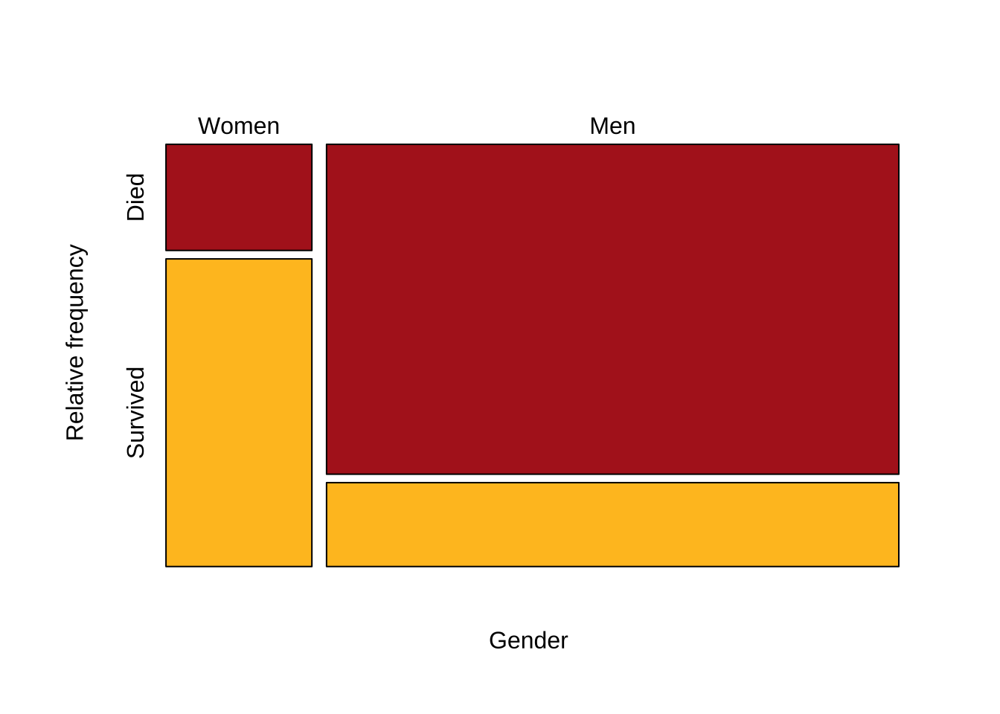
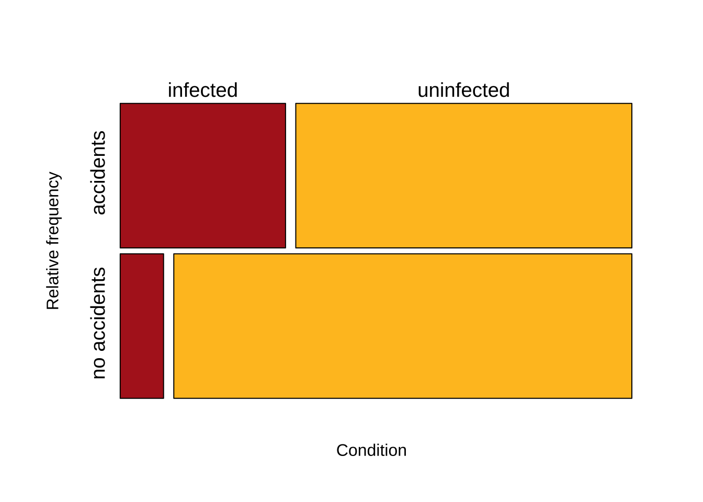

# nhl players' birthdays
nhl <- tibble(
month = c("Jan", "Feb", "Mar", "Apr", "May", "June", "Jul", "Aug", "Sep", "Oct", "Nov", "Dec"),
month.num = 1:12,
births = c(133, 125, 114, 119, 119, 123, 96, 91, 83, 84, 73, 85)
)
# turn month into ordered factor (ordered by month.num). For plots
nhl <- nhl |>
mutate(month = fct_reorder(.f = month, .x = month.num, .desc = TRUE))
nhl
## # A tibble: 12 × 3
## month month.num births
## <fct> <int> <dbl>
## 1 Jan 1 133
## 2 Feb 2 125
## 3 Mar 3 114
## 4 Apr 4 119
## 5 May 5 119
## 6 June 6 123
## 7 Jul 7 96
## 8 Aug 8 91
## 9 Sep 9 83
## 10 Oct 10 84
## 11 Nov 11 73
## 12 Dec 12 85Examples from lectures (ch. 8-9)
Once again, this lab is more about statistics than coding per se.
We will look at:
One categorical variable: Chi-square goodness of fit tests
Two categorical variables: Risk ratio, Odds Ratio,Chi-square independence test; Fisher’s test*
Lecture slides for these on the course website.
One categorical variable: $^2 $ goodness of Fit tests
There are many functions associated with the \(\chi^2\) distribution in R:
dchisq: returns the value of the Chi-Square probability density function.pchisq: returns the value of the Chi-Square cumulative density function.qchisq: returns the value of the Chi-Square quantile function.rchisq: generates a vector of Chi-Square distributed random variables.
Proportional Model: NHL example
We looked at this example when discussing the proportional model and its use in a goodness-of-fit test. Our hypotheses were:
\(H_0\): Elite hockey players are born randomly across the year.
\(H_A\): Elite hockey players are NOT born randomly across the year.
Let’s start by making a barplot of these NHL births (one categorical variable):
ggplot(data = nhl, aes(x = month, y = births)) +
geom_col(fill = okabe_ito["orange"])
now let’s make this plot a little prettier
library(ggpubr) # pretty ggplot themes
nhl.plot <- ggplot(data = nhl, aes(x = month, y = births)) +
geom_col(fill = okabe_ito["orange"]) +
coord_flip() + # flip cartesian coords.
annotate(geom = "text", x = 12:1, y = 5, label = nhl$births, color = "white") + # add numbers to bars
ggtitle("Number of NHL players born by month") + # add title
theme_minimal() + # pretty theme
theme(
axis.ticks = element_blank(), # remove axis tics
axis.title.x = element_text(
size = 14, # larger x title
hjust = 1 # right align x title
),
axis.title.y = element_text(
size = 14, # larger y title
hjust = 1 # right align x title
)
)
nhl.plot # better!
Next thing we need is our expected number of NHL births per each month. This comes from a giant dataset of births by month from the general population.1
# human births per month
births <- tibble(
month = c(
"Jan", "Feb", "Mar", "Apr", "May",
"June", "Jul", "Aug", "Sep", "Oct", "Nov", "Dec"
),
`births (%)` = 100 * c(
Jan = 0.0794, Feb = .0763, Mar = .0872,
Apr = .0863, May = .0895, June = .0857, Jul = .0876,
Aug = .085, Sep = .0854, Oct = .0819, Nov = .0770,
Dec = .0787
)
)If you don’t know this already, here’s a neat way to format a table/data.frame/tibble in a pretty way in your knitted document:
library(kableExtra)
births |> kable() # there are many ways to stylize this and customize it| month | births (%) |
|---|---|
| Jan | 7.94 |
| Feb | 7.63 |
| Mar | 8.72 |
| Apr | 8.63 |
| May | 8.95 |
| June | 8.57 |
| Jul | 8.76 |
| Aug | 8.50 |
| Sep | 8.54 |
| Oct | 8.19 |
| Nov | 7.70 |
| Dec | 7.87 |
Let’s add expected births per month to the NHL dataset:
# I will do this by joining the NHL and births datasets by a column they have in common: month. I will use dplyr::inner_join()
nhl <- full_join(nhl, births) |> # add a column with expected prop
mutate(expected.prop = `births (%)` / 100) |> # convert % to prop
mutate(
expected.n = expected.prop * sum(births), # expected.n
`expected %` = 100 * expected.prop
) # expected %
## Joining with `by = join_by(month)`
nhl
## # A tibble: 12 × 7
## month month.num births `births (%)` expected.prop expected.n `expected %`
## <chr> <int> <dbl> <dbl> <dbl> <dbl> <dbl>
## 1 Jan 1 133 7.94 0.0794 98.9 7.94
## 2 Feb 2 125 7.63 0.0763 95.0 7.63
## 3 Mar 3 114 8.72 0.0872 109. 8.72
## 4 Apr 4 119 8.63 0.0863 107. 8.63
## 5 May 5 119 8.95 0.0895 111. 8.95
## 6 June 6 123 8.57 0.0857 107. 8.57
## 7 Jul 7 96 8.76 0.0876 109. 8.76
## 8 Aug 8 91 8.5 0.085 106. 8.5
## 9 Sep 9 83 8.54 0.0854 106. 8.54
## 10 Oct 10 84 8.19 0.0819 102. 8.19
## 11 Nov 11 73 7.7 0.077 95.9 7.7
## 12 Dec 12 85 7.87 0.0787 98.0 7.87Now we are ready to conduct a \(\chi^2\) goodness-of-fit test.
Let’s use mutate to create a new column with \(\frac{(O-E)^2}{E}\):
nhl <- nhl |> # (O-E)^2)/E for each row
mutate(`sq_dev_over_expect` = (expected.n - births)^2 / expected.n)
# nhl |> kable() # have a look
# get chi-squared by adding all values in the column
obs.chi2 <- nhl |> summarise(
chi2 = sum(`sq_dev_over_expect`)
)
obs.chi2
## # A tibble: 1 × 1
## chi2
## <dbl>
## 1 44.9Now we can use pchisq to find the p-value.
# first define degrees of freedom:
degF <- nrow(nhl) - 1 - 0
# pull chi2 value from tibble into a vector
obs.chi2 <- pull(obs.chi2)
# pchisq:
pchisq(q = obs.chi2, df = 11, lower.tail = F) # a very low p-value
## [1] 5.07e-06Just for fun, let’s plot what the probability density for df=11 looks like:
# simple base R plot
curve(dchisq(x, df = 11), from = 0, to = 100)
Another way of obtaining this p-value is using the chisq.test function. It expect as input either a numeric vector or a matrix. Let’s do both.
# with numeric vector x with observed births and p=exp.prop for each month
chisq.test(x = nhl$births, p = nhl$expected.prop)
##
## Chi-squared test for given probabilities
##
## data: nhl$births
## X-squared = 45, df = 11, p-value = 5e-06Binomial Model: Monkey Flower example
Poisson Model: Lousy Fish example
# create tibble with data
lousy.fish <- tibble(num_parasites = 0:9, num_fish = c(103, 72, 44, 14, 3, 1, 1, 0, 0, 0))
lousy.fish
## # A tibble: 10 × 2
## num_parasites num_fish
## <int> <dbl>
## 1 0 103
## 2 1 72
## 3 2 44
## 4 3 14
## 5 4 3
## 6 5 1
## 7 6 1
## 8 7 0
## 9 8 0
## 10 9 0
# create totals (fish and parasites)
fish.sum <- lousy.fish |> summarise(
total_fish = sum(num_fish),
total_parasites = sum(num_fish * num_parasites)
)
fish.sum
## # A tibble: 1 × 2
## total_fish total_parasites
## <dbl> <dbl>
## 1 238 225Make a pretty table for your knitted document:
lousy.fish |>
kable() |>
kable_styling(font_size = 16)| num_parasites | num_fish |
|---|---|
| 0 | 103 |
| 1 | 72 |
| 2 | 44 |
| 3 | 14 |
| 4 | 3 |
| 5 | 1 |
| 6 | 1 |
| 7 | 0 |
| 8 | 0 |
| 9 | 0 |
Relative Risk
We will use the titanic dataset for the RR and OR examples.
titanic <- read.csv(
url("https://whitlockschluter3e.zoology.ubc.ca/Data/chapter09/chap09f01Titanic.csv"),
stringsAsFactors = FALSE
)
head(titanic)
## gender survival
## 1 Men Survived
## 2 Men Survived
## 3 Men Survived
## 4 Men Survived
## 5 Men Survived
## 6 Men Survived
titanicTable <- table(titanic$survival, factor(titanic$gender, levels = c("Women", "Men")), useNA = c("ifany"))
titanicTable
##
## Women Men
## Died 109 1329
## Survived 316 338
# mosaic plot
mosaicplot(t(titanicTable),
col = c("firebrick", "goldenrod1"), cex.axis = 1,
sub = "Gender", ylab = "Relative frequency", main = ""
)
The relative risk (RR) is the probability of the undesired outcome (death) in the treatment group (women) divided by the probability in the control (men) group.
Our contingency table titanicTable has the undesired outcome (death) in the treatment (women) group in the top left position. The riskratio() function from epitools expects the opposite layout, so we need to flip the table and reverse the order of the rows to use it. We can do this all at once with the following arguments to the riskratio() function. The full output of the command is shown below.
library(epitools)
# Using the wald method for the CI
RR1 <- riskratio(t(titanicTable), rev = "both", method = "wald")
RR1
## $data
##
## Survived Died Total
## Men 338 1329 1667
## Women 316 109 425
## Total 654 1438 2092
##
## $measure
## risk ratio with 95% C.I.
## estimate lower upper
## Men 1.000 NA NA
## Women 0.322 0.273 0.379
##
## $p.value
## two-sided
## midp.exact fisher.exact chi.square
## Men NA NA NA
## Women 0 3.47e-96 3.11e-102
##
## $correction
## [1] FALSE
##
## attr(,"method")
## [1] "Unconditional MLE & normal approximation (Wald) CI"
# To grab the key output, namely the estimate of the RR and the 95% confidence interval, use the following command:
RR1$measure[2, ]
## estimate lower upper
## 0.322 0.273 0.379
# here is the same thing but using a different method to obtain the CIs:
# using bootstraps for the CI
RR2 <- riskratio(t(titanicTable), rev = "both", method = "boot")
RR2
## $data
##
## Survived Died Total
## Men 338 1329 1667
## Women 316 109 425
## Total 654 1438 2092
##
## $measure
## risk ratio with 95% C.I.
## estimate lower upper
## Men 1.000 NA NA
## Women 0.322 0.269 0.375
##
## $p.value
## two-sided
## midp.exact fisher.exact chi.square
## Men NA NA NA
## Women 0 3.47e-96 3.11e-102
##
## $correction
## [1] FALSE
##
## attr(,"method")
## [1] "Unconditional MLE & bootstrap CI"
RR2$measure[2, ]
## estimate lower upper
## 0.322 0.269 0.375Odds Ratio
In R, the simplest way to estimate an odds ratio is to use the command fisher.test(). This function will also perform a Fisher’s exact test (more on that later). The input to this function is a contingency table.
# OR
OR1 <- fisher.test(titanicTable)
# you can use $ to get the values of interest
# OR estimate
OR1$estimate
## odds ratio
## 0.0879
# CI for the OR
OR1$conf.int
## [1] 0.0678 0.1132
## attr(,"conf.level")
## [1] 0.95Alternatively, you can use the package epitools.
library(epitools)
# using fisher method for the OR and CI. this gives the same result as fisher.test()
OR3 <- oddsratio(titanicTable, method = "fisher")
OR3
## $data
##
## Women Men Total
## Died 109 1329 1438
## Survived 316 338 654
## Total 425 1667 2092
##
## $measure
## odds ratio with 95% C.I.
## estimate lower upper
## Died 1.0000 NA NA
## Survived 0.0879 0.0678 0.113
##
## $p.value
## two-sided
## midp.exact fisher.exact chi.square
## Died NA NA NA
## Survived 0 3.47e-96 3.11e-102
##
## $correction
## [1] FALSE
##
## attr(,"method")
## [1] "Conditional MLE & exact CI from 'fisher.test'"
OR3$measure[2, ]
## estimate lower upper
## 0.0879 0.0678 0.1132Toxoplasma example
toxoplasma <- read.csv(
url("https://whitlockschluter3e.zoology.ubc.ca/Data/chapter09/chap09e3ToxoplasmaAndAccidents.csv"),
stringsAsFactors = FALSE
)
head(toxoplasma)
## condition accident
## 1 infected accidents
## 2 infected accidents
## 3 infected accidents
## 4 infected accidents
## 5 infected accidents
## 6 infected accidentsFirst, make the 2 x 2 contingency table. The table that results has the undesired outcome (accidents) for the treatment group (infected) in the top left.
toxTable <- table(toxoplasma$accident, toxoplasma$condition)
toxTable
##
## infected uninfected
## accidents 61 124
## no accidents 16 169
# let's also make a mosaic plot
mosaicplot(toxTable,
col = c("firebrick", "goldenrod1"), cex.axis = 1.2,
sub = "Condition", dir = c("h", "v"), ylab = "Relative frequency", main = ""
)
OR using epitools:
OR <- oddsratio(toxTable, method = "fisher")
OR$measure[2, ]
## estimate lower upper
## 5.17 2.79 10.09Footnotes
Ventura et al. (2001). Births: final data for 1999. National Vital Statistics Reports Vol. 49, No. 1.↩︎